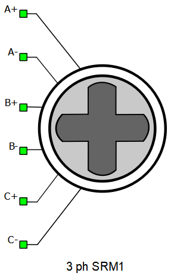
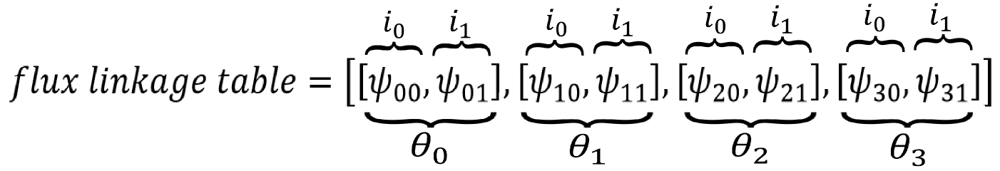
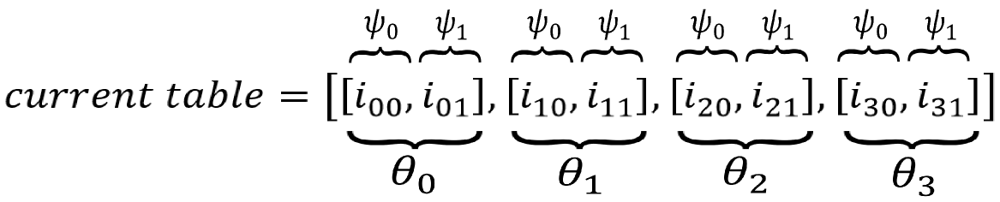
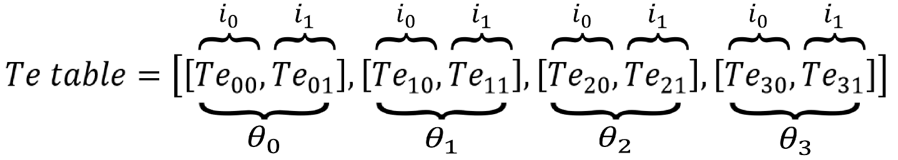

Three Phase Switched Reluctance Machine
Description of the Three Phase Switched Reluctance Machine component in Schematic Editor.

A+, A-, B+, B-, C+, and C- are terminals of stator A, B, and C windings, respectively. Each of the stator windings uses the single phase variant of the current source interface.
Electrical sub-system model
The electrical part of the machine is represented by the following system of equations.
where:
where:
| symbol | description |
|---|---|
| ψas | Stator phase A flux [Wb] |
| ψbs | Stator phase B flux [Wb] |
| ψcs | Stator phase C flux [Wb] |
| ias | Stator phase A current [A] |
| ibs | Stator phase B current [A] |
| ics | Stator phase C current [A] |
| vas | Stator phase A voltage[V] |
| vbs | Stator phase B voltage[V] |
| vcs | Stator phase C voltage[V] |
| Rs | Stator phase resistance [Ω] |
| θr | Rotor mechanical angle [rad] |
| Te | Machine developed electromagnetic torque [Nm] |
| Tea | Machine developed electromagnetic torque in phase a [Nm] |
| Teb | Machine developed electromagnetic torque in phase b [Nm] |
| Tec | Machine developed electromagnetic torque in phase c [Nm] |
Mechanical sub-system model
Motion equation:
| Symbol | Description |
|---|---|
| ωm | Rotor mechanical speed [rad/s] |
| Jm | Combined rotor and load moment of inertia [kgm2] |
| Te | Machine developed electromagnetic torque [Nm] |
| Tl | Shaft mechanical load torque [Nm] |
| b | Machine viscous friction coefficient [Nms] |
| θm | Rotor mechanical angle [rad] |
Saturation effects
- Flux linkage and torque lookup tables, or
- Stator current and torque lookup tables.
The lookup tables should be provided either as nested Python lists or 2-dimensional numpy arrays. For the flux linkage and the torque tables, the numbers of elements in the inner lists must match the number of elements in the stator current vector, while the number of elements in the outer list must match the number of elements in the machine mechanical angle vector. For the stator current table, the numbers of elements in the inner lists must match the number of elements in the flux linkage vector, while the number of elements in the outer list must match the number of elements in the machine mechanical angle vector. This is summarized in Figure 2, Figure 3, and Figure 4.



Ports
- A+ (electrical)
- Stator winding phase A + port.
- A- (electrical)
- Stator winding phase A - port.
- B+ (electrical)
- Stator winding phase B + port.
- B- (electrical)
- Stator winding phase B - port.
- C+ (electrical)
- Stator winding phase C + port.
- C- (electrical)
- Stator winding phase C - port.
- load_in
- Available if Model Load source is selected
Electrical (Tab)
- Rs
- Stator phase resistance [Ω]
- Ns
- Number of stator poles
- Nr
- Number of rotor poles
- theta vector
- Mechanical angle input vector [deg]
- current vector
- Stator phase current input vector [A]
- flux linkage table
- Available if Flux map is selected
- Flux linkage lookup table [Wb]
- flux linkage vector
- Available if Current map is selected
- Flux linkage input vector [Wb]
- current table
- Available if Current map is selected
- Stator phase current lookup table [A]
- Te table
- Electrical torque lookup table [Nm]
Mechanical (Tab)
- Jm
- Combined rotor and load moment of inertia [kgm2]
- Friction coefficient
- Machine viscous friction coefficient [Nms]
- Unconstrained mechanical angle
- Limiting mechanical angle between 0 and 2π
Load (Tab)
- Load source
- Load source can be set from SCADA/external or from model (in model case, one signal processing input will appear).
- In TyphoonSim, if SCADA/external is chosen as Load source, analog signals are read from the internal virtual IO bus. Hence, if some signal is sent to analog ouput 1, it will appear on analog input 1.
- External/Model load type
- Load type: torque or speed
- Load ai pin
- Load ai pin for external torque/speed command.
- In real-time/VHIL simulation, Load ai pin represent HIL analog input address for external torque command.
- In TyphoonSim, analog signals are read from the internal virtual IO bus. Hence, if some signal is sent to analog ouput 1, it will appear on analog input 1.
- Available only if SCADA/external is set as Load source.
- Load ai offset
- Assigned offset value to the input signal representing external torque command.
- Available only if SCADA/external is set as Load source.
- Load ai gain
- Assigned gain value to the input signal representing external torque command.
- Available only if SCADA/external is set as Load source.
External load enables you to use an analog input signal from a HIL/TyphoonSim (internal virtual IO bus in TyphoonSim) analog channel with the load_ai_pin address as an external torque/speed load, and to assign offset (V) and gain (Nm/V) to the input signal, according to the formula:
Feedback (Tab)
- Encoder ppr
- Incremental encoder number of pulses per revolution
- Encoder Z pulse length
- Z digital signal pulse length in periods. Can be Quarter length or Full period (default)
- Resolver pole pairs
- Resolver number of pole pairs
- Resolver carrier source
- Resolver carrier signal source selection (internal or external)
- Resolver carrier frequency
- Resolver carrier signal frequency (internal carrier) [Hz]
- Available only if the Resolver carrier source property is set to internal
- External resolver carrier source type
- External resolver carrier signal source type selection (single ended or differential)
- Available only if the Resolver carrier source property is set to external
- Resolver ai pin 1
- Resolver carrier input channel 1 address (external carrier)
- Available only if the Resolver carrier source property is set to external
- In TyphoonSim, analog signals are read from the internal virtual IO bus. Hence, if some signal is sent to analog ouput 1, it will appear on analog input 1.
- Resolver ai pin 2
- Resolver carrier input channel 2 address (external carrier)
- Available only if the Resolver carrier source property is set to externaland External resolver carrier source type property is set to differential
- In TyphoonSim, analog signals are read from the internal virtual IO bus. Hence, if some signal is sent to analog ouput 1, it will appear on analog input 1.
- Resolver ai offset
- Resolver carrier input channel offset (external carrier)
- Available only if the Resolver carrier source property is set to external
- In TyphoonSim, analog signals are read from the internal virtual IO bus. Hence, if some signal is sent to analog ouput 1, it will appear on analog input 1.
- Resolver ai gain
- Resolver carrier input channel gain (external carrier)
- Available only if the Resolver carrier source property is set to external
- In TyphoonSim, analog signals are read from the internal virtual IO bus. Hence, if some signal is sent to analog ouput 1, it will appear on analog input 1.
- Absolute encoder protocol
- Standardized protocol providing the absolute machine encoder position.
 Absolute encoder protocol is ignored in TyphoonSim. Changing its
value will not affect TyphoonSim simulation at all.
Absolute encoder protocol is ignored in TyphoonSim. Changing its
value will not affect TyphoonSim simulation at all.
- Singleturn bits
- Number of machine absolute encoder singleturn bits.
- Available only if Absolute encoder protocol is not None.
-
Absolute encoder protocol is ignored in TyphoonSim. Changing its
value will not affect TyphoonSim simulation at all.
- Enable multiturn
- Enables multiturn absolute encoder support.
- Available only if Absolute encoder protocol is not None.
-
Absolute encoder protocol is ignored in TyphoonSim. Changing its
value will not affect TyphoonSim simulation at all.
- Multiturn bits
- Number of machine absolute encoder multiturn bits.
- Available only if Enable multiturn is checked.
-
Absolute encoder protocol is ignored in TyphoonSim. Changing its
value will not affect TyphoonSim simulation at all.
- EnDat/SSI/BiSS clock DI pin
- Clock digital input pin for the chosen absolute encoder protocol type.
- Available only if Absolute encoder protocol is not None.
-
Absolute encoder protocol is ignored in TyphoonSim. Changing its
value will not affect TyphoonSim simulation at all.
- Clock DI logic
- Clock DI pin logic: active high/active low.
- Available only if Absolute encoder protocol is not None.
-
Absolute encoder protocol is ignored in TyphoonSim. Changing its
value will not affect TyphoonSim simulation at all.
- EnDat data DI pin
- EnDat data digital input pin.
- Available only if Absolute encoder protocol is EnDat.
-
Absolute encoder protocol is ignored in TyphoonSim. Changing its
value will not affect TyphoonSim simulation at all.
- Data DI logic
- EnDat data DI pin logic: active high/active low.
- Available only if Absolute encoder protocol is EnDat.
-
Absolute encoder protocol is ignored in TyphoonSim. Changing its
value will not affect TyphoonSim simulation at all.
If an external resolver carrier source is selected, the source signal type can be set as either single ended or differential. The single ended external resolver carrier source type enables use of an analog input signal from the HIL/TyphoonSim (internal virtual IO bus in TyphoonSim) analog channel with the res_ai_pin_1 address as the external carrier source. Additionally, offset (V) and gain (V/V) values can be assigned to the input signal, according to the formula:
The differential external resolver carrier source type enables use of two analog input signals from the HIL/TyphoonSim (internal virtual IO bus in TyphoonSim) analog channels with the res_ai_pin_1 and the res_ai_pin_2 addresses. Analog signals from these HIL/TyphoonSim (internal virtual IO bus in TyphoonSim) analog inputs are subtracted, and the resulting signal is used as the external differential carrier source. Additionally, offset (V) and gain (V/V) values can be assigned to the input signal (similarly to the single ended case), according to the formula:

The following expression must hold in order to properly generate the encoder signals:
| symbol | description |
|---|---|
| enc_ppr | Encoder number of pulses per revolution |
| fm | Rotor mechanical frequency [Hz] |
| Ts | Simulation time step [s] |


Snubber (Tab)
- Rsnb stator
- Stator snubber resistance value [Ω]
All machines with current source based circuit interfaces have the Snubber tab in the properties window where the value of snubber resistance can be set. Snubbers are necessary in the cases when an inverter or a contactor is directly connected to the machine terminals. This value can be set to infinite (inf), but it is not recommended when a machine is directly connected to the inverter since there will be a current source directly connected to an open switch. In this case, one of each switch pairs S1 and S2, S3 and S4, and S5 and S6 will be forced closed by the circuit solver in order to avoid the topological conflicts. On the other hand, with finite snubber values, there's always a path for the currents Ia and Ib, so all inverter switches can be open in this case. Circuit representations of this circuit without and with snubber resistors are shown in Figure 8 and Figure 9 respectively. Snubbers are connected across the current sources.


Output (Tab)
This block tab enables a single, vectorized signal output from the machine. The output vector contains selected machine mechanical and/or electrical variables in the same order as listed in this tab.
- Execution rate
- Signal processing output execution rate [s]
- Electrical torque
- Machine electrical torque [Nm]
- Mechanical speed
- Machine mechanical angular speed [rad/s]
- Mechanical angle
- Machine mechanical angle [rad]
- Stator phase a flux linkage
- Magnetic flux linkage in phase a [Wb]
- Stator phase b flux linkage
- Magnetic flux linkage in phase b [Wb]
- Stator phase c flux linkage
- Magnetic flux linkage in phase c [Wb]
- Phase a torque component
- Electric torque developed in phase a [Nm]
- Phase b torque component
- Electric torque developed in phase b [Nm]
- Phase c torque component
- Electric torque developed in phase c [Nm]